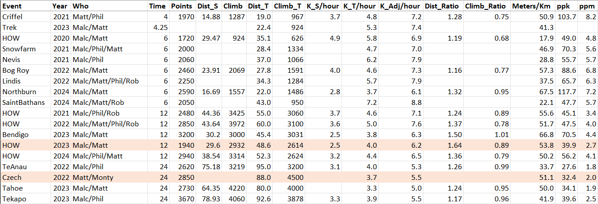
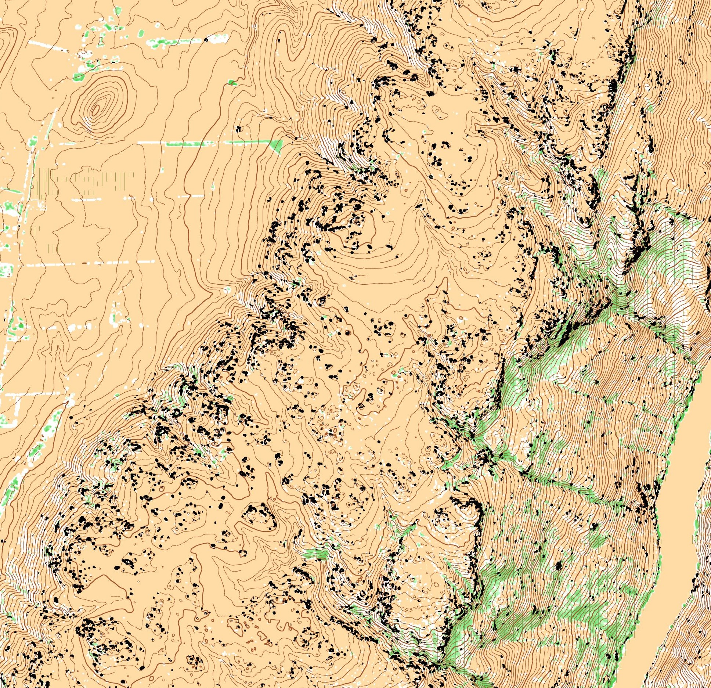
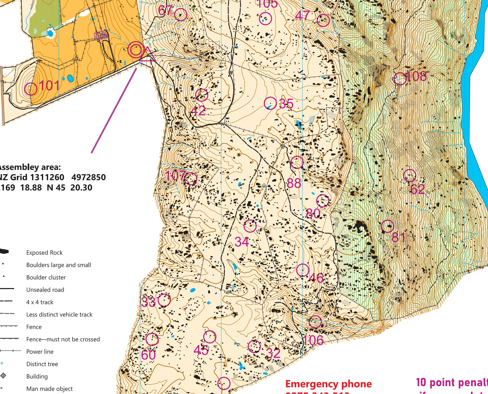

Rogaine Planning
Planning a Route
Goals
It’s a good idea that the team all agrees before hand what their goals might be. It will save you from a disagreement. There’s no correct goal, except for having a good time.
- Out for fun
- Explore somewhere new
- Maximise your score
- Win
Tools
- String
- Highlighters
- Pen/Pencils/Markers
- Plastic Bags
Distance/Score
How Far can you go?
have a good idea of how far you can travel in the terrain
how many km’s/hour
fast walking = 6kph/10 mins/km
Only the top (best in the world) teams will do 6kph for 12+ hours
Straight Line or True Distance
I keep a record of event’s, so I know how far and fast I can move on different terrain, both the true and the straight distance to help with measuring using the string.

Time, Distance, Climb Spreadsheet The Actual Planning
look for clusters or points or interesting places to go
understand generally how many points there are in each part of the map - don’t leave the highest value section to the last quarter
link a few common controls together (eg on a ridge)
have a finish plan, a loop to add or a loop to cut off
Day/Night - where do we want to be at night?
make a plan separately then compare and merge the best bits
mark some time on the map. Estimate where you want to be at 1/4 and 1/2 way, where do you want to be with 1 hour to go?
- Plan a 10km Route (hint: clearing the course is 20km)
- Note the 1/2 way (5km Mark)
- What’s your Score
Route: 42, 107, 33, 60, 45, 32, 106, 46, 80, 88, 35, 105, 47, 65, 87, 37, 39, 86, 38, 102, 82, 41, 84, 40, 67
Halfway: ~105
Score: 1480
Route Execution
You’ve planned a route now you have to get around the course.
The difference between the good and the very good teams is less about speed and more about efficiency. Most teams actually walk at the same speed, yes the good teams run a bit more.
Communicate, Communicate Communicate
1st Control - Getting used to the map
Where is the start, which direction are we going to the first control, how are we going to get there, what are we going to see on the way?
Approach/Exit Controls
If you’ve ticked of the above and you can see the feature/control you want now is the time to split tasks, rogaining is after all a team event. One person carry on navigation into the control and another person plan the exit and route to the next control. Punch that control, exit, communicate the plan, check your direction, Repeat
Time/Distance - “The course giveth and the course taketh away”
One of you needs to keep a track of time and distance, are you in front of your estimates or behind. If you are in front of your estimates in a short event it’s sensible to start adding controls if they are efficient to do so. In a long…….it’s better just to stick to your plan. Night and Fatigue will almost certainly take back any advantage that you have.
as a rule of thumb - if I was up on time by 30-60 minutes in a 12-24hr event I wouldn’t deviate from my plan until late in the event.
If you next control is 2km away, that’s going to take at least 20 minutes to get to. No point in looking for it after 10 minutes, same for climbing up a hill.
RULE OF THUMB - 100m climb = 1km
Food/Nutrition/Gear
- Short (2-4 Hours)
- keep it simple
- some fluids, some lollies, some warm gear
- Long (12-24 Hours)
- It Depends……….
- a variety, whole foods
- for a 24 hour I plan for about 20 hours worth of food
- decent whole food, sandwhich, wraps, marmite and cheese on 2, 4, 6, ….. etc hours
- Baby Food, Baby Food, Baby Food
- 2x 12 hour bags, 3x 8 hours bags ?????
- Fluids - conditions
- Hot - more
- Cold/Night - less
- Too much fluid is way worse that too little
Pre/Post Event
Event Log
Terrain


- Overanalysis
- Open Orienteering Mapper
- Rogaine Results built by Greig Hamilton
Appendix
I asked Greig if he had thoughts on a Rogaine Planning Workshop, at that point this page was a draft of headers. Greig kindly downloaded his mind in long form below. It’s a good read, mostly uneditted.
Rogaine Planning - Greig Hamilton (Multiple World Champion)
Day/Night
Day time makes navigation easier so consider tackling the navigationally challenging areas when it’s light. Night time it’s often good to be on tracks (assuming they are accurate), or to be able to use obvious natural features for route finding. Fences should only be cautiously used when it’s dark as they change often. Surprisingly, being in steep hilly terrain is often good at night. It’s harder to go one hill or valley too far as it takes much more effort to get through this terrain. Gently rolling terrain can be very hard at night as often some of the features are hidden between the contour lines. If there is only 20-30m between a hill top and the valley then it’s easy for there to be a 10m high ridge that isn’t on the map at all, but in the dark it will feel like a big ridge that would be on the map.
Consider attackpoints when planning the route. This is particularly important at night time but should be considered at all times. Is there a big obvious feature before each control and something else after the control? These can greatly simplify the navigation. It also helps with calculating how close to the control you are. If the attackpoint is 500m before the control then it’s somewhere between 3-10min until you get to the control. If the catching feature is 200m after the control and you hit it then you can work out how many mins back to the control. From the attackpoint if after 2min you see what looks like the control location stream junction for example you can ignore it because you have at least 1min more to go.
Work out how fast you travel.
You’ll never go faster than 4min/km. In fact you’ll only ever do 5min/km if you’re on a slightly downhill track, fresh and likely to win. So you can assume that 5-6min/km is your top speed over any reasonable distance. Top teams cover 5-6km/hr so they’re averaging 10-12min/km. Work out your climbing speed, it varies depending on how steep the hill is. 10-15min/km if reasonably gentle, 30min/km+ if steep. Work out how fast you climb. It’s under 1000m/hr but knowing how much less is helpful. If you climb at 600m/hr then the 200m climb on the next leg will take around 20min. If the control is halfway up the hill then there is no need to look until you’re around 10min up the hill.
In the dark the above info is very useful. At night your area of view is just what your head torch can see. If you know how fast you walk on flat terrain then you have extra info for estimating how far you are from the last known point. As an example if you are walking at roughly 10min/km and you need to take the left track junction in 500m then in around 5min you should expect the junction. If you’ve gone 10min you’ve probably missed the junction and can go back.
For reference a top team will almost always be doing somewhere between 5-15min/km except on very steep hills. A mid pack team is likely to be 10-30min/km. Get an understanding for what 5min/km, 10min/km, 15min/km feels like in different terrain. 15min/km on a flat track is fairly relaxed walking, but it takes a lot of effort to walk at 10min/km unless you’re concentrating. Understand how much bush or scrub slows you down.
Tools
Some use a pinboard and put pins all over their map. Different colours for different points. It looks very pretty but you’ve now just put holes in the centre of each control when later on you may want to know what was in that hole. Another approach is to use a clear piece of plastic, place this over the map and then use a white board marker to link up the controls. This has the advantage that you can easily change the route by rubbing out the white board marker. Your map is still pristine. And you can easily overlay each other’s route and see where you differ and are the same. For shorter events an A3 map bag is enough. For longer events you can buy clear plastic by the metre from spotlight or similar. It’s only a few dollars and lasts for many events. A piece of string or one of those fancy measuring tools is good for working out the distance of the route. String is as good as anything. If you are really nerdy you can have different strings for each map scale but it’s just as easy to measure a big distance on the string and use the north lines of the map to work out how far it is.
Understand what you are capable of Go to rogaine-results.com and find out how far you went in previous events. Compare the straight line distance from the website with your GPS distance and climb if you have it. Do this for many events over different race lengths. Compare how far you go compared to the top teams or people who you believe you’ll be competitive with. If you normally cover 80km in 24hrs don’t plan on doing 100km unless you’ve suddenly got a lot fitter or the terrain is very flat. Notice how climb alters the distance you cover. Work out what your strengths and weaknesses are. Are you really fit and can run most of the time but somehow make big mistakes regularly. Or are you the reverse, you never run but you get the control cleanly every time. Do you wonder why other teams somehow manage to get way more points than you even though you covered a similar distance? Working out where you are weak is the first step to improving it
Planning on the map
Top teams have it easy. They can just link up all the controls, calculate the total distance and just drop controls until it looks roughly right. They normally only have to drop a few unappealing controls to shorten their route. Slower teams have a much more interesting challenge. They will need to miss lots of controls, potentially half of them. There are different strategies which have their pros and cons. One approach is to completely ignore sections of the map. Perhaps there is a big hill and you don’t like hills so you ignore it. Or there is a section of farmland with lots of fences and you hate climbing over fences so you ignore it. Or you really want to enjoy the view so you definitely want to go up high. Another approach is to take a sampling of the whole map, this often entails linking up a lot of valuable controls while avoiding unneeded climbs or dog legs to get low point controls. Another approach is to identify areas that are technically difficult and avoid them (or focus on them if you want technical navigation). All of these approaches have merit. A fit team that isn’t strong at navigation may want to cover a lot of ground but only get easy controls. Whereas an older team that no longer runs may want to focus on steep hilly terrain where everyone has to walk so their speed difference is minimal.
When dropping whole areas of the map it’s important to have an understanding of the following: How many points on the map How many points in each distinct area of the map How fast/slow each area is How technically challenging each area is One area may have heaps of points but be really hilly so points/min isn’t actually that great. Or a really technical area may be great if you can navigate really well but turn out to be really poor after you’ve made your third 20min mistake.
Doing the actual planning Know roughly how far you’ll travel in a straight line 50-100k in a 24hr event which is likely to be 60-120km of actual distance. Link up all the controls in some semi coherent manner and measure it. This gives you an upper bound on how much distance it will take to clear the course. If it’s 140km and you think you will cover 80k then you know you’re probably going to cover a bit over half the map. Do the following individually!!! When starting to plan there are often controls that go together. There is only one real way to link the controls without adding dog legs or unneeded climb. These are often just 2 or 3 controls in isolated groups. It’s useful to link these up and treat them as if they are single controls. Next work on areas, if you’re planning on visiting every part of the map then work out roughly what percentage of the controls in each section you want to visit. The percentage of the map you will cover that you worked out before will be helpful here. Link up the controls in a nice flowing route. Drop anything that looks like it adds a lot of distance or climb for not many points. Next work out where the low point controls are and then ignore them unless they’re on your route between higher point controls. Repeat for each area until you have a course planned Now consider night/day. Work out where it will be dark and see if it makes sense to be there at night time. If it doesn’t then you may need to start again. Work out the end of your route. You want to have lots of options for dropping low point controls or picking up additional controls near the end of your route. It’s much easier to drop a control with 1hr left or pick up an extra control with 1hr left than to have to make a decision 6hr from the finish about whether to pick up a control or drop it. Hopefully the direction you are starting in has some high scoring points. You want to be scoring points as fast as possible so spending the first 30min getting a 20pt control is not a great use of your time unless you’re about to get lots of high point controls to make up for it.
Now compare your route with your teammates. Hopefully everyone has different routes. Maybe one will be clearly better than the others but it’s more likely that each person has some good bits and bad bits. Hopefully you can now merge all the good bits from each route and come up with a new great route. It’s really important that you do the initial planning separately and aren’t influenced by your teammate. Doing it separately means you get two or three chances of getting the best route.
Now that you’ve got a merged route break your route up into parts. Four parts is a good number. Ideally each part should take about the same length of time so if you have a really hilly section assume you will cover less distance in that part. These will give you an idea out on the course if you are ahead or behind time. Now plan which controls you can add/remove from your route. Say if you are 30min behind after 6hrs what control will you drop to get back closer to your planned route? If you are ahead by 1hr are there some additional controls you can get now or later on that make sense to add to the route. Plan this stuff before you start as you’re fresh and thinking clearly. Whatever great idea you come up with out on the course that you think is better than what you planned at the start of the day is almost certainly a bad idea. Pre-planning these things means you don’t have to stop to adjust your route, you can just talk to your teammate, say we’re 30min ahead and should we get control 43 now? Then either get it or continue as planned.
Use all of the available time. The planning time is the best time to agonize over which order to do controls or see if there is a route with less climb for a sequence of controls. You want to be confident that you’ve got the best route possible when planning ends. You don’t want to be making changes to your plan once the event has started as this wastes time and it is unlikely to lead to a better plan. Teams often just mark up the first route they come up with and miss out on significantly better routes.
Nutrition Eat/drink
whatever works. For some this is gels, lollies and sports drinks. For others it’s sandwiches, bread rolls and precooked pasta. You don’t need 1L of water per hour. The more food you can eat (and process) the better you’re likely to go. It’s a trade off though. You have to carry it which will slow you down. If you try and eat/drink too much you’re likely to cause gastric distress and feel sick or go slow. The slower you go the higher percentage of fats you’ll burn so you can get away with eating less and burning your ample fat reserves.
Gear
Wear what looks cool
Actually executing the plan
Most teams travel at a similar speed when moving. That top team probably isn’t going that much faster up the hill than you. They’re probably just walking slightly faster. The biggest speed difference between a top team and a team doing half the distance is in the runnable sections. It’s possible for a mid pack team to shuffle along or even walk purposefully and cover quite a bit more ground than just wandering along. There are two areas where the top teams are significantly better than you. And you can be a lot better too, it doesn’t even require you to run more. 1) The top teams don’t stop. Consider how often your team stops and work out why. Do you stop to discuss where to go next? Do you stop to discuss the route to the next control? Do you stop to discuss where you are or why things no longer make sense? Do you stop for a lovely picnic lunch? When you fill up your water bottle, did you get it out of your pack and take the lid off before getting to the stream or water container? Can you reach your food while moving? Can you get your head torch on without stopping? What about at the control, do you pass the punch to your teammate? Does the first person to punch start walking a few metres in the direction of the next control so the next teammate doesn’t have to think about looking at their map? Did you check which way you’re exiting the control before you got to it? Every time you stop you are wasting precious time. Over a 24hr event most teams probably stop for over an hour when all of these micro stops are added up. That’s a few controls you missed. 2) The top teams don’t make big navigation mistakes. There’s no point running at 10km/hr only to spend 20mins searching in the wrong place for the control. A top team is never more than a few mins from a last known location. It’s impossible for them to get properly lost if they knew where they were 2mins ago. They keep in contact with the map and tick off features as they go past them. Most teams lose heaps of time on several controls every event. It doesn’t matter how fast you are if you’re making mistakes of more than a few mins then you should look at improving your navigation. Often teams get distracted talking and lose contact with the map. Or lose track of time and think they’ve gone further than they really have or not as far as they think. These cause big losses of time because you’ve got to relocate before you can start fixing the problem. Sometimes teams lose a small amount of time near the control, this can be due to having an indistinct attackpoint or perhaps a poor bearing from the attackpoint. Other ways to lose time are to rely on only some of the info on the map. Teams will often follow a farm track and take the second turn off without realizing that the track has been re-routed or new tracks added. Fences are even worse. Always use as much info as possible. Use the track or fence, but also use a stream or the contours or vegetation. Use time to estimate distance. Look around you, maybe you can use something further away like when going up a valley you could keep track of the side valleys. When one of these things stops making sense it will heighten your senses that you might be about to make a mistake or it might confirm to you that the tracks are not reliable. Improve your navigation.
Above it discusses working out how fast you travel in different types of terrain. This can be done in the initial hours of the event. Keep track of how fast you’re moving on different terrain and then use this info later on. It will be the most accurate info as it will take into account the actual terrain on the map as well as your current fitness.
Analysis
If you’ve planned a good route then come the end of the race you should have mostly covered the planned route. If you finished early and had no controls to get near the end then work out how you could have discovered this earlier and added extra controls while on course. If you finished late work out why you were so ambitious at some point you were on target to get back on time, then you weren’t. Why didn’t you notice this earlier and correct for it? Did you just plan an overly ambitious route with no controls you could drop near the end, if so you planned poorly. If you got back on time but had to drop controls near the end did you drop the right ones? Were they just some low point controls or were you too ambitious early on and had to drop big points at the end? How can you catch this sooner next time? Did you struggle with the navigation? Why did you make mistakes? Were you tired or not concentrating or talking or did you make a parallel error or try and fit the map to the ground? When you made a mistake where did it go wrong? At some point you knew where you were then you didn’t. What happened to cause that and why? Why couldn’t you fix it sooner? Look at rogaine-results.com on your computer and look at your splits. Are you consistently the same amount behind the fastest teams on each leg? If you’re much faster or slower than normal on some legs then look at who else did that leg, maybe you are slow because the top team did that leg and teams with a simliar score to you actually took the same time as you. Or maybe you’re fastest because no one else took your stupid route that missed three controls in which case don’t be proud of your fastest split, instead work out why you thought that was a good leg in the first place. Look at the chart of points vs time. Do you have a nice upwards sloping straight line or do you have a big flat section during the night? Or does the line flatten off after the first few hours. A straight line indicates you’re consistently scoring points over the whole event. If you have flat sections it means there are times where you’re not getting many points. If your curve starts up steeply and then flattens off it may mean you went too fast at the start or you had a really high scoring start of your course and then less points later on. Compare your efficiency to other teams that got a similar score or covered a similar distance. Perhaps you could have got many more points if you had a better plan. If you care about efficiency per 100m of climb or combined distance and climb then these are available too. Look at the routes other teams planned. Did they link the controls up in a similar way or completely different? What was better/worse about their routes? Upload your GPX track. This will show exactly where you went. It’s helpful to show where you were searching in the wrong place or how you got pushed off your bearing. Or just how much off the straight line you are.
Use the soon to be released route-planner on rogaine-results.com to easily plan different routes to see if you can come up with a more optimal route
Teamwork
It’s a team sport. You need to find teammates that are going to be good to race with. If you’re vastly faster than your teammate are you happy going slow? If you hate hills but your teammate loves them, how will you resolve your differences when they suggest going straight up and over a hill and you suggest running around the hill? If your teammate is faster than you, are you happy for them to carry some of your stuff? Do they want to carry it? What about towing you? Or are you just out for a pleasant time and speed doesn’t matter? Hopefully your teammate has the same view as you do, whatever view that is.